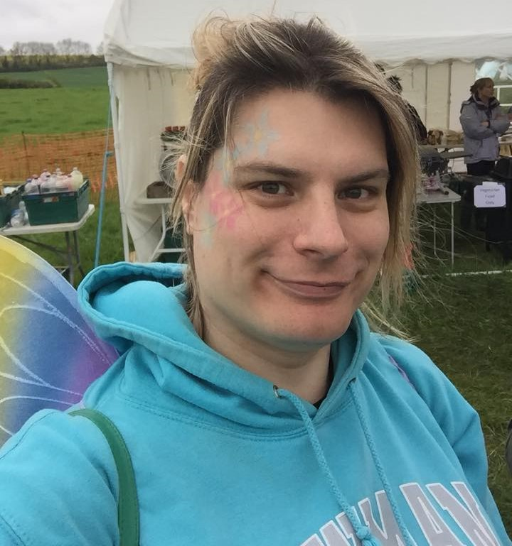
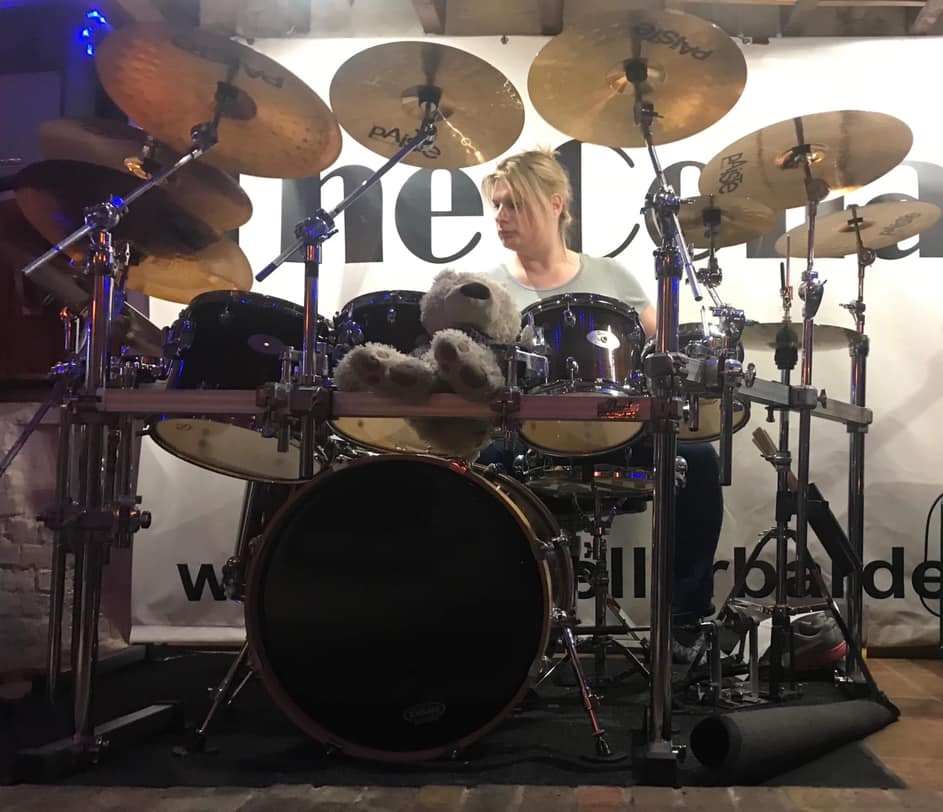

BELLA | A REAL POWERHOUSE


Behind every great party band is a heartbeat that refuses to quit. For Chord-ially Invited, that heartbeat belongs to Bella—a drummer whose "powerhouse" reputation is matched only by her eclectic musical roadmap.
Bella’s journey to the drum throne wasn't a straight line. It was a path paved with 90s CD collections, undergraduate original bands, and a childhood dream of gigging at her own wedding.
What was the catalyst for forming Chord-ially Invited?When I got engaged, it was the first time in years I'd not been in a band and it really unsettled me. As a child I only really wanted two things for my wedding (other than marrying the right person of course), I knew the dress I wanted and I knew I wanted to gig. It was the big push I needed to start something new, but I was also really missing that live energy. I’ve always had a broad range—my CD collection back in the day covered Enya, The Corrs, Britney Spears, Oasis, Meat Loaf, Status Quo, Roxette, and Queen (and all the others I've forgotten). Forming this band allowed me to bring all those influences together into one high-energy setlist.
Your musical taste seems to have evolved through some pretty iconic live experiences...Absolutely. I remember being at Leeds in '01; Marilyn Manson and Papa Roach were huge in the common room during my A-levels, and while they weren't exactly my cup of tea then, seeing Manson live was something else—he was amazing. Green Day and The Eels also played that year; it was an outstanding lineup. Then, playing in my first original band as an undergrad helped broaden my influences even more. It was with this band that I got to gig for the first time, which was memorable for lots of reasons!
The gig actually got shut down by the police, just after we walked off stage because of a fight in the crowd during our set. We were all sat in the bar downstairs when three riot vans worth of police burst in! They tried to interview us, but I couldn't tell them anything because the stage lights were so bright I couldn't see past the edge of the stage. The Sergeant didn't believe me until he sat behind my kit and realised he was totally blind to the room too! That same gig, the bass guitarist fell off the stage because he tripped over a monitor. I knew he was okay because I could still hear him playing, but he just vanished into the dark! He scrambled back onto the stage at the end of that song looking a little sheepish.
You’ve cited Jeff Rich (Status Quo) as a major influence. How does that drive your playing?I saw Quo at Wembley in '92 when I was eleven. I had to stand on my seat just to see, much to the annoyance of the man behind me! I think he thought he lucked-out being behind a child. My parents wanted me to play guitar like my brother, but once I heard Jeff play live with all that energy and drive, I was hooked. He said in an interview once that with rock music, you have to give 100% to every song; you can't take it easy, the music demands it, and he's right. There's definitely a balance to strike between giving it your all and being mindful of the space you're in, but I always try to bring that same level of energy regardless.
Interestingly, I’ve been learning piano since late 2025. I see myself as a strange (though obviouselly less successful) mirror to Caroline Corr—she went from piano to drums, and I've done the reverse. I've got a very eclectic range of influences but Jeff and Caroline have definitely been significant; I’ll listen to something and think, 'That sounds good, I'll have some of that.' Before Covid, I'd been in an originals band and recorded an album. I was practising recently and one of those songs came on and I thought, 'Ooh, what are they playing there?' before realising it was me and I'd just forgotten!"
You’ve got a really big set up, which echos Jeff's kit from his Quo days. Is that just coincidence?Nah, it's more to distract people from how I can't actually play! Seriouselly though, yes I guess there's a bit of a nod to Jeff's setup, but I just wanted a kit that could give me the sound I wanted. It's also deceptive, it all builds inwards from the frame, so it looks big, but it's not as big as it looks, if that makes sense? We play a mix from some more easy going songs, which need a lighter touch, to some really high-energy rockers that need a big sound. So the cymbals have to be able to work for both. I'm a psychologist in my other life, and I can't lie, I've wondered how much of it is to hide me away at the back of the stage so no one's really looking at me. Which clearly doesn't work, because people always seem to remember the kit. I moved back from living in London a few years ago and had been away a while, then on my first visit to Tesco someone stopped me and said, 'Hey, you're the drummer from that band, with that big kit!' It really threw me, but I can't lie, as odd as it was, it felt kinda special to be regognised like that, and not for something like 'Hey, you fell over in street that time and made a fool of yourself!'
It's odd, I've had things like that a couple of times, I remember there was this time with this very drunk woman at a festival who stopped me and said, 'Hey, you're the drummer from that band!'. She then went on to comment 'you don't see many girl drummers, they're usually all boys, but you're not bad, for a girl drummer' I didn't quite know how to take that at the time, but I think it was a compliment. I also don't think it's necessarily true anymore, it was then perhaps, but now there's some really great female drummers out there, which obviously a good thing.
You have a teddy bear on your kit when you gig, whats the story there?Yes I do! Penny, has been with me for years. I don't really know why I started bringing her to gigs, but I just felt like I needed something there. I've never really explained it to anyone, I think it was a bit of a comfort thing at first, but now it's just become part of the ritual. I think maybe it's a of a way of saying 'I'm a bit of an overgrown child and I don't care!' I take my music seriously, but I try not to take myself too seriously. So, Penny gigs with me, she just helps me feel at home on stage.
What keeps you persevering through the long, exhausting sets?The audience energy. I remember playing Seend Beer Festival years ago and the place was jumping. We were exhausted after ninety minutes, but they asked for a whole extra set and you just feed off that crowd. It is such a rush, but physical fitness is definitely a thing. I used to swim four times a week and do a five-k run, but I've fallen out of the habit a bit since Covid. I need to get back into it because it really helps with the stamina. But ultimately, it's the crowd that keeps me going. I heard someone say once that all musicians are just chasing that same magic feeling from their first gig in the audience, and I think that's really true. I’ve had those 'empty room' gigs too, of course, but seeing a room move to the music and energy you're giving makes the exhaustion worth it.
The Full Loadout
Shells: Premier Artist Series
- 8", 10", 12", 13" Rack Toms
- 16", 18" Floor Toms
- 20" Bass Drum
Snares:
- Primary: Yamaha Oak Custom 14" x 7"
- Side: Black Panther Wasp (10" x 5.5")
The Brass (Paiste):
- 14" Signature Precision Sound Edge Hi-Hats
- 8" Alpha Splash
- 16" Alpha Thin Crash
- 18" Signature Precision Thin Crash
- 16" Alpha Power Crash
- 18" Signature Precision Power Crash
- 14" Rude Crash
- 18" Alpha China
- 20" Signature Full Ride
- 20" Signature Precision Reflector Bell Ride
Sticks: Vic Firth
Heads: Remo Emperor
Book The Band